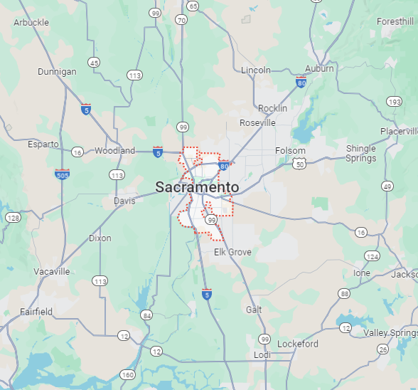
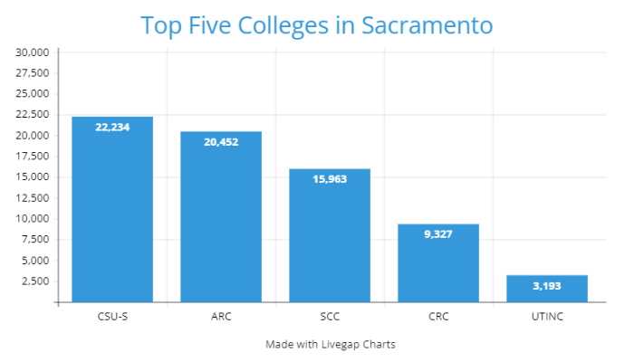

Quick Facts
- Population: 528,001 (2022)
- Classification:
- Urban: 100%
- Rural: 0%
- Region: Sacramento Valley
- Incorporated: February 27th, 1850
- Median Household Income (2022):
- California: $91,551
- Sacramento: $80,254
| 2019 | 2020 | 2022 | |
|---|---|---|---|
| Murders | 34 | 42 | 54 |
| Assaults | 2,023 | 2,501 | 3,266 |
| Thefts | 10,644 | 8,903 | 10,328 |
Top Five Colleges in Sacramento
by Full-Time Enrollment- California State University-Sacramento
- American River College
- Sacramento City College
- Cosumnes River College
- Universal Technical Institute of Northern California Inc
